Scott and Mark learn to Vibe Check
Official description
AI can turn an idea into a working demo faster than ever. But can that demo survive two experts who have seen every trick in the book? In this live Build showcase, developers present AI-assisted apps, agents, tools, and workflows to Mark Russinovich and Scott Hanselman. Mark and Scott will ask how it works, where the seams are, what the AI actually built, and whether the result is clever prototype, production-ready software, or something unexpectedly magical. Come for the demos. Stay for the technical reveal.
Summary
Overview
A live Build showcase in which Scott Hanselman and Mark Russinovich interrogate four community-built, AI-assisted projects to classify each as "AI slop," "vibes," or genuine AI-augmented engineering. The format combines on-stage demos with live code reveals and technical questioning about how much was hand-written versus model-generated. The recurring conclusion is that domain expertise remains essential to steer AI toward production-quality results.
Key announcements
- Vibe OS by Steve Sanderson [00:06:02] — A bootable "operating system" (a ~1.3GB VHDX) whose every application UI is hallucinated in real time by an LLM rather than backed by code, rendered as HTML diffs within Copilot sessions.
- Cursed CSS query engine by Cassidy Williams [00:21:26] — A browser-tab tool that loads a real SQLite database via WebAssembly but performs all querying, ordering, and limiting in pure CSS using selectors, checkboxes, and Flexbox; open-sourced on her GitHub [00:30:42].
- AI E scheduling bot by Sean "swyx" [00:34:34] — A production conference-scheduling agent for the AI Engineer World's Fair, treating session placement as a bin-packing problem with human-in-the-loop approval across Slack, email, and iMessage, built on Cloudflare Workers and a D1 database.
- Dataset Agent by Simon Willison [00:48:42] — An agent plug-in for his Datasette project that answers natural-language questions over his 24-year blog database, runs locally or against hosted models, and includes a newly published MicroPython sandbox plug-in for safely executing agent-written code.
Topics covered
- Generating live application UIs as model-produced HTML diffs within a single Copilot session
- Using a structured/HTML representation instead of image diffusion to render interactive interfaces
- Running SQLite in the browser via WebAssembly while offloading query logic to CSS
- Human steering versus manual code fixes when an AI resists "wrong" approaches
- Agent design with bounded turn counts and custom loops rather than open-ended autonomy
- Logging, verification, and approve/reject/modify gates for agent actions
- Cost/specialization trade-offs of building bespoke internal tools versus buying SaaS
- Plug-in architecture as a way to compose tools, contrasted with MCP
- Adversarial multi-model review (high/medium/low severity by model agreement) for security
- Sandboxing untrusted, agent-generated Python code
- Trust in software accruing through prolonged personal use rather than expert authorship
Notable quotes
"There's no code at all. Everything, in all these [windows], is being hallucinated in real time by the AI." — Steve Sanderson
"All of the querying being done is in pure CSS... Should you do this? Probably not. But I did." — Cassidy Williams
"The thing I care most about isn't that an expert wrote the [code]... [it's that] a human being has actually been using it for longer." — Simon Willison
Products and tools mentioned
- GitHub Copilot (app, CLI, and SDK)
- VS Code
- Cursor
- Claude Code / Codex
- SQLite / WebAssembly
- Cloudflare Workers, D1, and Wrangler CLI
- Datasette
- LLM (Python library)
- db-to-sqlite [inferred]
- MicroPython
- GPT-5.5 [inferred]
- Qwen 3.5 [inferred]
- Claude Opus 4.6
- Swift UI / Xcode
- GitHub Pages
Speakers featured
- Scott Hanselman — host
- Mark Russinovich — host
- Steve Sanderson — creator of Knockout.js; presented Vibe OS
- Cassidy Williams — presented the CSS query engine
- Sean "swyx" — organizer of the AI Engineer World's Fair; presented the AI E scheduling bot
- Simon Willison — creator of Datasette; presented the Dataset Agent
Follow-up resources
- Cassidy Williams' CSS query engine, open-sourced on her GitHub [00:30:42]
Frames
{kind=link}
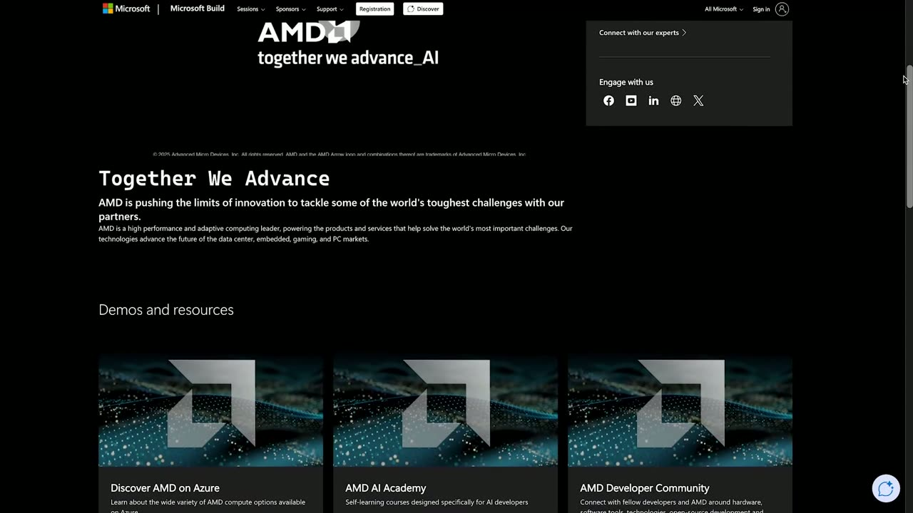
{kind=link}
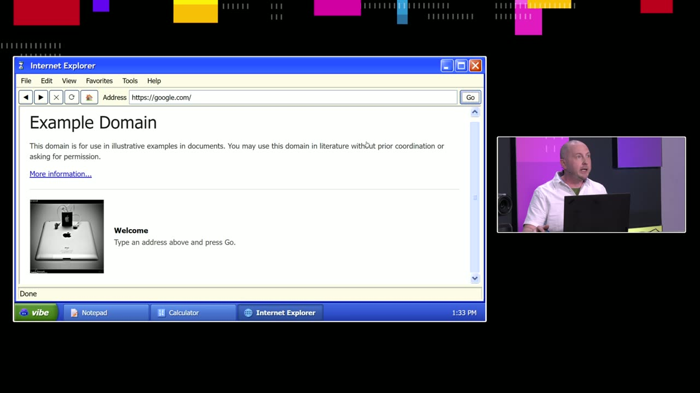
{kind=link}
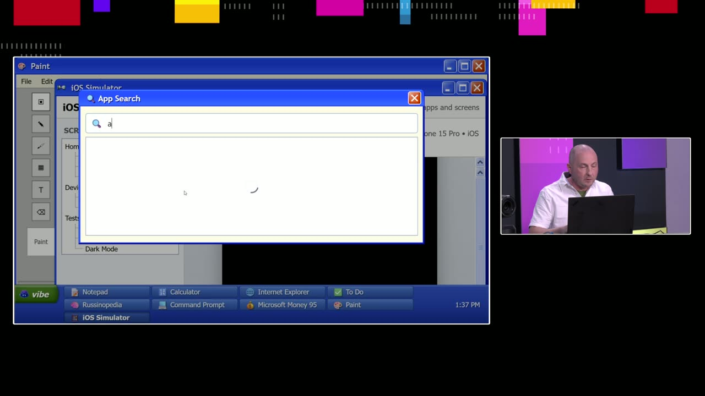
{kind=link}
{kind=link}
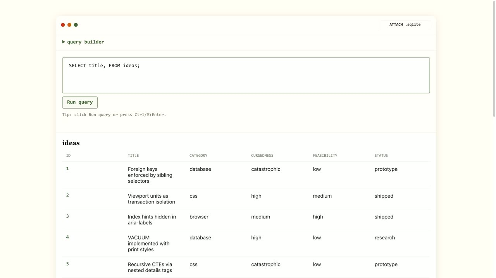
{kind=link}
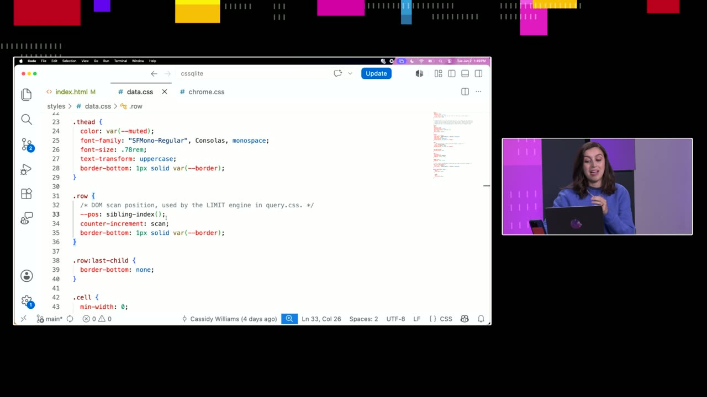
{kind=link}
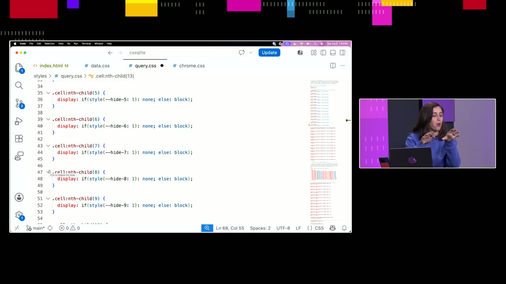
{kind=link}
{kind=link}
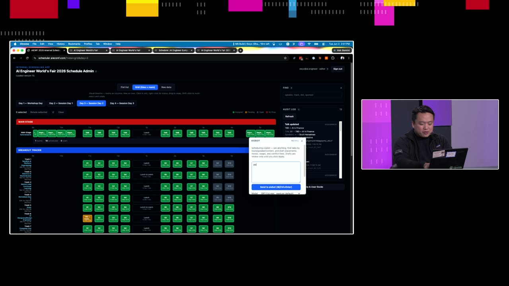
{kind=link}
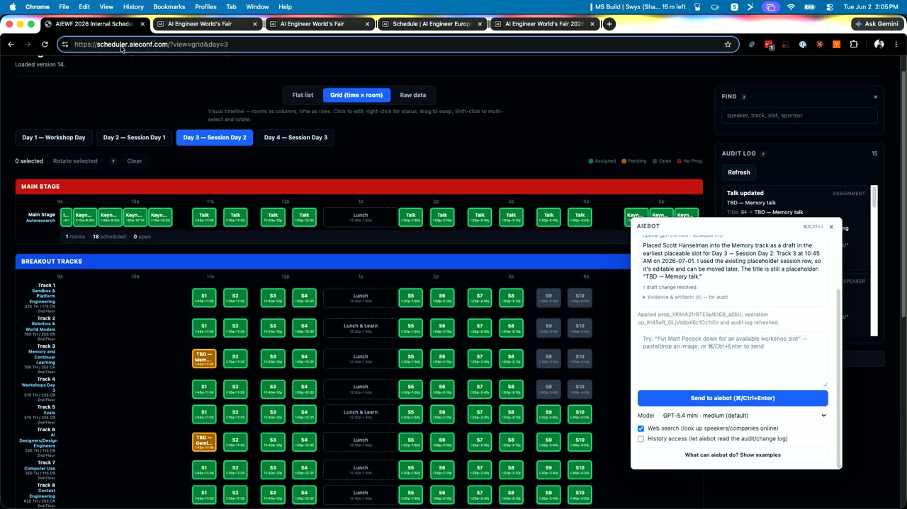
{kind=link}
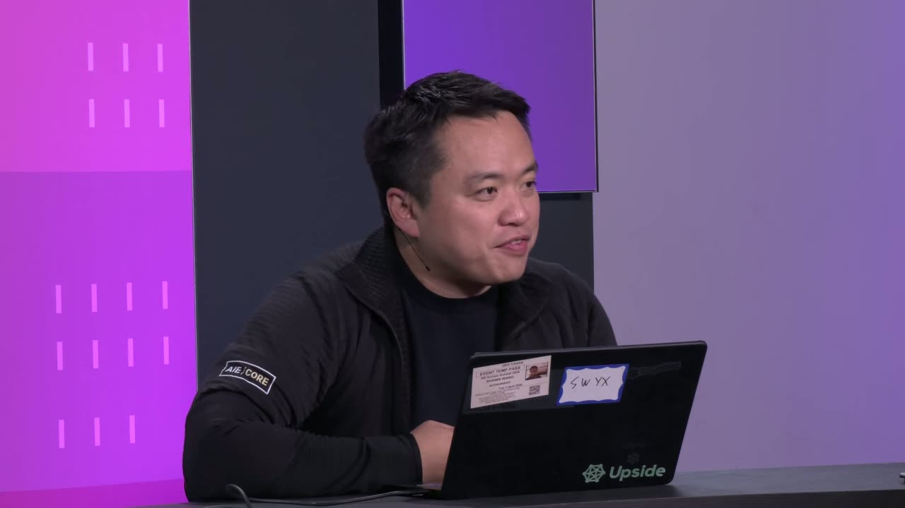
{kind=link}
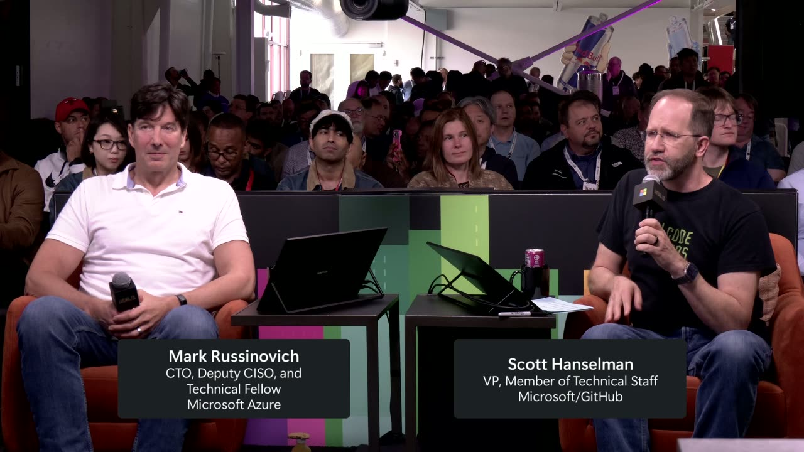
{kind=link}
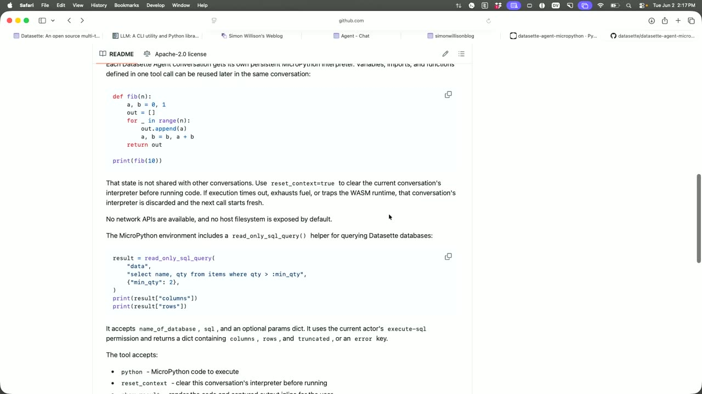
{kind=link}
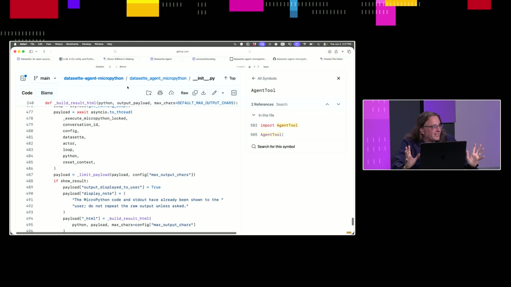
{kind=link}
Transcript
Show / hide transcript (71,229 chars)
[00:00:00] [MUSIC] [00:00:02] >> Hey, [00:00:06] Mark Russinovich, who has [00:00:06] absolutely no ide [00:00:10] on today. Have you been [00:00:10] prepared or [00:00:14] Zero. [00:00:14] >> Is your mic [00:00:18] >> Is it? [00:00:18] >> It's on. [00:00:22] know what's going on and that's [00:00:22] exactly the way I like because [00:00:26] he makes me uncomfortable on our [00:00:30] to every week so now it's our [00:00:30] turn to make him u [00:00:34] because this is Scott and Mark [00:00:34] Learn to Vibe Check. So here's [00:00:38] Nobody wants an AI to create [00:00:38] applications that are not [00:00:42] are three kinds of applications [00:00:42] there's AI slop. [00:00:46] and then here's AI engineering, [00:00:46] proper AI augment [00:00:50] >> Definitely. [00:00:50] >> So what w [00:00:54] creators from out in the [00:00:54] community who have created [00:00:58] applications and in the style of [00:01:02] going to come up and here [00:01:02] present their applications sho [00:01:06] going to show us their code. [00:01:06] We're going [00:01:10] applications and we're going to [00:01:10] guess is it slop, is it vibes, [00:01:14] engineering, and it's going to [00:01:14] be awesome and the points don't [00:01:18] >> And we can ask them [00:01:18] questions about how the code [00:01:22] them questions we're basically [00:01:22] doing live interviews on [00:01:26] want to make sure that everyone [00:01:26] is doing great work with things [00:01:30] Claude and with things like [00:01:30] Codex, can we make [00:01:34] software or are we going to be [00:01:34] gaslit by the commun [00:01:38] going to be pretty cool. We [00:01:38] also h [00:01:42] We've got a lot of folks to that [00:01:42] have put a [00:01:46] when we have crazy ideas like [00:01:46] this. It' [00:01:50] make us possible. So we're [00:01:50] going to shout out to our [00:01:54] sponsors and we're going to come [00:01:54] right back with our first guest. [00:02:02] >> Here we are at Microsoft [00:02:02] Build in [00:02:06] coming to you from the wonderful [00:02:06] AMD booth [00:02:10] floor. I'm really excited to [00:02:10] talk to [00:02:14] are happening to really empower [00:02:14] our [00:02:18] right now. Adrian, welcome. [00:02:18] >> Thank you. I'm excited t [00:02:22] things happening in this space. [00:02:22] I'm sure we could talk [00:02:26] >> Let's do that. What's [00:02:26] really important abo [00:02:30] partnership between Microsoft [00:02:30] and AMD matter to t [00:02:34] about the technical innovations [00:02:34] that are happening in this [00:02:38] space, but tools and [00:02:38] technologies isn't [00:02:42] together with Microsoft, is [00:02:42] buildi [00:02:46] innovation. [00:02:46] >> It seems like t [00:02:50] completely altered the way that [00:02:50] we think about work [00:02:54] forms and these platforms as a [00:02:54] whol [00:02:58] about. Tell us a little bit [00:02:58] about that how we should be [00:03:02] exciting point here at this [00:03:02] conference [00:03:06] really blown up. People have so [00:03:06] many more [00:03:10] technologies they're choosing [00:03:10] but the capabilities and m [00:03:14] where things run, how well they [00:03:14] run, and [00:03:18] these are new experimental [00:03:18] choices that designers have [00:03:22] >> That's amazing. And there's [00:03:22] a cost impact there as well [00:03:26] something that they now can [00:03:26] contro [00:03:30] commitments on the choices they [00:03:30] were [00:03:34] for them. They had to commit to [00:03:34] those [00:03:38] cost to explore is zero, really. [00:03:38] >> [00:03:42] people. It can be a little [00:03:42] overwhelming, too, but [00:03:46] is happening there. And I know [00:03:46] that there's going [00:03:50] about here. There's another [00:03:50] conversation. There's [00:03:54] to offer. Thank you for the [00:03:54] partnership that you [00:03:58] is fantastic. Such exciting [00:03:58] stuff. If you want to dig d [00:04:02] into everything that's being [00:04:02] talked about here, you are [00:04:06] to want to visit AMD's sponsor [00:04:06] page on build.Microsof [00:04:10] resources, links to the sessions [00:04:14] and everything so that you can [00:04:14] get busy right away. All right. [00:04:18] Make sure you do that and I'll [00:04:18] see you again soon. [00:04:22] thank you so much again to our [00:04:26] sponsors for making this happen. [00:04:26] This is Scott and Mark, lear [00:04:30] Vibe Check. Our first guest [00:04:30] today is the wonderful Steve [00:04:34] Sa [00:04:38] programmer, you've probably [00:04:38] heard of things like Knockout [00:04:42] JS. [00:04:46] He's done amazing things on the [00:04:46] Internet and he has brought [00:04:50] seen. No one here has seen this [00:04:50] before. We don't know [00:04:54] completely bespoke. We don't [00:04:54] know if he wrote it in [00:04:58] could be slop. It could be [00:04:58] vibes. It [00:05:02] What do you have for us, sir? [00:05:02] >> All [00:05:06] I'm going to show you today [00:05:06] could be pretty momentous. S [00:05:10] slightly historical context, all [00:05:10] right? So [00:05:14] right? We've come a long way, [00:05:14] stone tools, [00:05:18] culture and mathematics and [00:05:18] computing. These thi [00:05:22] we've really reached the [00:05:22] pinnacle of what we could [00:05:26] a species yet or at least until [00:05:26] what I'm about to show you just [00:05:30] now. Okay. So I know you're [00:05:30] probably all thinking like, oh [00:05:34] whole software industry, and [00:05:34] we're not ready for all of [00:05:38] change to deal with recently. [00:05:38] You know, [00:05:42] world where humans write code [00:05:42] into a [00:05:46] code and I know that that [00:05:46] probably feels like quite a big [00:05:50] true visionary, like myself, I'm [00:05:50] already thinking [00:05:54] I'm already there. So I'm going [00:05:54] to show you and I n [00:05:58] going to change everything about [00:05:58] how we work. [00:06:02] So introducing Vibe [00:06:06] It's the world's first [00:06:10] And I'm going to show it to you [00:06:10] right [00:06:14] real operating system. I can [00:06:14] boot it. It's a VHDX file here. [00:06:18] About 1.3 [00:06:22] probably make it smaller. I [00:06:22] didn't bother. I could b [00:06:26] on bare metal. But I'm not [00:06:26] going to. I'm going to [00:06:30] that boot up nice and fast. [00:06:30] It's very [00:06:34] comes up, you'll see it's got a [00:06:34] beautiful user interface that [00:06:38] productive. Okay. So here we [00:06:38] go. We're ready to get started [00:06:42] with that. It's a bit hard to [00:06:42] see there. Let's switch to a [00:06:46] full-screen view. And we're [00:06:46] going to start by running a few [00:06:50] built in here. So we'll get [00:06:50] some of the classics going. So [00:06:54] we'll have Notepad. We'll have [00:06:58] Explorer, and the thing that's [00:06:58] unique here, [00:07:02] will never have seen before, is [00:07:02] th [00:07:06] is no code at all. Everything, [00:07:06] in all these [00:07:10] being hallucinated in real time [00:07:10] by the AI. [00:07:14] So there's no buttons. There's [00:07:18] no event handlers, there's no [00:07:18] logic to say what to do, but the [00:07:22] application works. So if I do 5 [00:07:22] divided by 3, and then [00:07:26] if I can find that -- it's there [00:07:26] this time, [00:07:30] it works, right? I didn't write [00:07:30] any code, neither did AI. [00:07:34] There's no AI-written [00:07:38] exclusively with nothing behind [00:07:38] it. We've got [00:07:42] here. Unlike the boring [00:07:42] operating systems tha [00:07:46] today, this solves one of the [00:07:46] big problems that people have, [00:07:50] wondering when they're on the [00:07:50] Internet, is AI on now or [00:07:54] problem. There's no question to [00:07:58] is always yes, everything is AI. [00:07:58] So if I want to, I can go to, I [00:08:02] don't know, let's see if we can [00:08:06] a Wikipedia page, shall we? So [00:08:06] I'm going to go to Google.com [00:08:10] here. Let's do a sea [00:08:14] Hanselman Wikipedia. And we'll [00:08:14] do a [00:08:18] don't need to remind you this, [00:08:18] but all of the [00:08:22] seeing is completely [00:08:22] hallucinat [00:08:26] model, and the UI has been [00:08:26] updated in real time as we go. [00:08:30] And there's a [00:08:34] of Scott Hanselman. I'm not [00:08:34] sure about that one. All right. [00:08:38] We're not limited to these [00:08:38] built-in [00:08:42] search for any app that we want. [00:08:42] And everyone [00:08:46] do app demos. So anything I [00:08:46] search for, I'm going to [00:08:50] And it will just be created for [00:08:50] me on the fly. All right. [00:08:54] let's see what else we could [00:08:54] find in here. Let's go for one [00:08:58] of the classics and Carter 98. [00:09:02] Everyone loves that one. But [00:09:06] it's all about Mark Russinovich. [00:09:10] All right. So we can get a [00:09:10] fully customized version of [00:09:14] Encarta 98 on whatever subject [00:09:14] we're entrusted in. All right. [00:09:18] So lots of facts and figures [00:09:22] about Mark here. Let's see. [00:09:26] Selected facts. Talent for [00:09:30] turning internals into folklore. [00:09:34] other applications that you [00:09:34] would want, but normally [00:09:38] too difficult to make. So like [00:09:38] Commander XC, but it's alway [00:09:42] that's the sort of application [00:09:42] that I think is a genius [00:09:46] like that. So let's see what [00:09:46] we've got [00:09:50] Obviously, this is always [00:09:50] different every time. [00:09:54] Let's see if we can run bash in [00:09:54] here. [00:09:58] us. Bash, you are somehow [00:09:58] offended? Okay. [00:10:02] the idea, right? This is pretty [00:10:02] revolutionary way to [00:10:06] computing because we don't need [00:10:06] to write any code for any of our [00:10:10] any software you would like to [00:10:10] try out within Vibe [00:10:14] you can think of? [00:10:14] >> Money 95. [00:10:22] >> Civilization peaked at [00:10:26] Microsoft money 95. But Scott [00:10:26] Hanselman has a lot of [00:10:30] >> Oh. Scott Hanselman -- [00:10:30] >> You could say Scoot a [00:10:34] That's totally fine. [00:10:34] >> Let's see what money Scott [00:10:38] had in 1995. [00:10:42] >> And this is -- [00:10:42] >> This is Scott -- [00:10:46] >> It is Scott. [00:10:46] >> It's been [00:10:50] you, I guess. [00:10:50] >> Where are the tacos? [00:10:54] >> Okay. [00:10:54] >> I want [00:10:58] drawing of Scott on it. [00:10:58] >> Paint with a drawing of [00:11:02] >> I'm an owl, though. [00:11:02] >> Before your haircut. [00:11:06] >> But with [00:11:10] Hanselman. [00:11:10] >> And you've got this -- this [00:11:14] is Copilot SDK [00:11:18] chewing. [00:11:18] >> It's using Copilot [00:11:22] scenes. I can show you a little [00:11:22] bit how it works [00:11:26] normal picture of Scott [00:11:26] Hanselman for some [00:11:30] don't know what it means by very [00:11:30] normal [00:11:34] >> That's your cage. [00:11:34] >> That's my cage. That's the [00:11:38] cage you keep me [00:11:42] >> This is insane. This is [00:11:42] Vibe OS, can it have nested OSs? [00:11:46] How many OSs deep can we go? [00:11:50] Can you [00:11:54] that's like a terminal emulator, [00:11:54] so I need a terminal emulate ter [00:11:58] that's emulating a whole [00:12:02] an Altair. [00:12:02] >> Totally. So we can get an [00:12:06] iOS simulator in there what [00:12:10] thing I've ever seen in my life. [00:12:10] >> Me [00:12:14] right. So what have we got? [00:12:14] Oh, [00:12:18] this screen size, but yes we've [00:12:18] got a fully functional [00:12:22] appropriate windows CE buttons [00:12:22] that you are likely to see in an [00:12:26] iPhone. It's very legi [00:12:30] >> So did he write this from [00:12:30] scratch or he's vibing vibes? [00:12:34] >> I know. I told you it would [00:12:34] be [00:12:38] please. You have three minutes. [00:12:38] >> Define hallucination? [00:12:46] >> I'm sorry? [00:12:50] >> You call this [00:12:54] everything. [00:12:54] >> Are the sound people able to [00:12:58] make the sound come this way. [00:12:58] >> Louder can you hear [00:13:02] for you. [00:13:02] >> De [00:13:06] show you the code. All right. [00:13:06] So behind the scenes, what we've [00:13:10] got is inside our editor, [00:13:14] so what's happening, here, I [00:13:14] went through a few different [00:13:18] ways to try and do this. First [00:13:18] way I tried to do it was by just [00:13:22] using like stable diffusion, [00:13:22] that kind of [00:13:26] images of a desktop operating [00:13:26] sy [00:13:30] you click on it, all you can say [00:13:30] is, like, the user has clicked [00:13:34] at these [00:13:38] update things. So then I [00:13:38] switched over to [00:13:42] structured representation of a [00:13:42] UII tried a few different [00:13:46] versions of it. I made a custom [00:13:46] DSLI tried this thing calle [00:13:50] Cute which is a native UI thing [00:13:50] and I could generate a DSL [00:13:54] good job. The thing that really [00:13:54] suddenly was [00:13:58] job was when I switched it to [00:13:58] just to [00:14:02] these models have seen so much [00:14:02] HTML they ca [00:14:06] doing here is everyone one of [00:14:06] these [00:14:10] frame and when it pops open, [00:14:10] each one of [00:14:14] separate Copilot session within [00:14:14] Copilot [00:14:18] saying you're simulating this [00:14:22] produce some HTML that [00:14:22] represents it and it [00:14:26] model to put IDs inside all of [00:14:26] the elements and then whenever [00:14:30] the user clicks anything, all we [00:14:30] do is we send a message back [00:14:34] the AI saying the user has [00:14:34] clicked the element with [00:14:38] or whatever now produce a [00:14:38] different that I [00:14:42] HTML and so then the model [00:14:42] produces the Diff we [00:14:46] and the UI updates and you get [00:14:46] this [00:14:50] happening within one Copilot [00:14:50] session [00:14:54] where Steve is very clever, is [00:14:54] that [00:14:58] abilities and skills to create [00:14:58] slop. And that' [00:15:02] it's absolutely brilliant. It's [00:15:02] brilliant. I love [00:15:06] engineer could possibly do. Do [00:15:10] >> How long do you think this [00:15:10] woul [00:15:14] >> Yeah. [00:15:14] >> This vibe [00:15:18] long would it have taken. [00:15:18] >> A [00:15:22] >> Couple hours. [00:15:22] >> How long did this take you, [00:15:26] >> Few evenings. [00:15:26] >> I played with a [00:15:30] >> Total time, you think you [00:15:30] were probably [00:15:34] >> Total time maybe 5, six [00:15:34] hour [00:15:38] >> Five or six hours. I would [00:15:38] say this is two i [00:15:42] augmented software engineering. [00:15:42] Fantastic. We're goi [00:15:46] award. I'm going to get up and [00:15:46] we [00:15:50] >> Thank you so much. [00:15:54] some amazing vibes. We're going [00:15:54] to go to our sponsors right [00:15:58] but shout-out to Steve Sanderson [00:15:58] for an amazing opener, isn't [00:16:02] that cool, big hand for Steve, [00:16:06] sponsors and we'll be right [00:16:06] back. Thank you, sir. [00:16:18] floor at Microsoft build. I'm [00:16:18] so excited to be [00:16:22] beautiful Intel booth. I'm here [00:16:22] to have a [00:16:26] is going to tell us all about [00:16:26] what Microsoft and Intel [00:16:34] doing together. Brian, welcome [00:16:34] to [00:16:38] >> First time. [00:16:38] >> Well, we're h [00:16:42] people need to know about the [00:16:42] partnership that we have between [00:16:46] our two companies. [00:16:46] >> Yeah, I mean, Intel [00:16:50] partnership, and we've been [00:16:50] supporting the [00:16:54] community for Intel has for [00:16:54] almost 30 years now. It's [00:16:58] proud of that. And one thing [00:16:58] that we try [00:17:02] help developers to optimize [00:17:02] th [00:17:06] compute continuum. What I mean [00:17:06] by that is not every workload is [00:17:10] type. So there could be CPU, [00:17:10] and there [00:17:14] it could be NPU. We are helping [00:17:14] develo [00:17:18] workload. [00:17:18] >> How do they get started with [00:17:22] that? What do they nee [00:17:26] before moving forward? [00:17:26] >> We have [00:17:30] actually more than 100 million [00:17:30] AIPCs out in the m [00:17:34] made to run on or are capable of [00:17:34] running across t [00:17:38] infrastructures. So we also [00:17:38] have software toolkits [00:17:42] developers to optimize their [00:17:42] code to run [00:17:46] that workload. [00:17:46] >> Oh, that is fantas [00:17:50] concerned about security. What [00:17:50] about that? [00:17:54] security, especially in this [00:17:54] kind of age of AI, is growing in [00:17:58] importance. And Intel has [00:18:02] developed a technology called [00:18:02] TDX, which enables confidential [00:18:06] Essentially, what that does is [00:18:06] it allows developers to run [00:18:10] workloads in a confidential [00:18:10] computing environment and have [00:18:14] data is secure. [00:18:14] >> Super [00:18:18] fantastic. You can learn more [00:18:18] about that and more on the [00:18:22] sure to check it out. [00:18:22] [MUSIC] [00:18:30] >> Whether you're [00:18:34] person or watching online, [00:18:34] sponsors elevate your [00:18:38] and help accelerate your goals. [00:18:38] Discover how Anthropic [00:18:42] with Claude code and co-work in [00:18:42] Microsoft [00:18:46] powerful infrastructure data and [00:18:46] appl [00:18:50] with Oracle. Find out more [00:18:50] about [00:18:54] AI to solve the issues of today [00:18:54] and accelerate the innovations [00:18:58] is visit our sponsor directory [00:18:58] for [00:19:02] inspiring customer solutions and [00:19:02] special product offers. [00:19:06] Sponsors make more possible. [00:19:10] >> And we are [00:19:14] and Scott Learn to Vibe Check. [00:19:14] We've just [00:19:18] make a vibe-coded entire [00:19:18] operating system in a cou [00:19:22] >> Amazing. It was amazing. [00:19:22] >> You w [00:19:26] >> I was impressed. Yeah, when [00:19:26] I see a project like that, [00:19:30] love that. [00:19:30] >> Everything Steve does I'm [00:19:34] like I wish I did that. But now [00:19:38] today we have Cassidy Williams [00:19:38] who's going to share with us [00:19:42] idea if it is AI slop if it is [00:19:42] vibes or if it is AI [00:19:50] what do you have for us. [00:19:50] >> [00:19:54] thinking a whole lot about [00:19:54] databases lately. There's [00:19:58] things and so I thought I had [00:19:58] would be interesting [00:20:02] runs on the tab and so if you [00:20:02] can see my scr [00:20:06] little query shell and so right [00:20:06] now it's doing [00:20:10] you've probably seen before with [00:20:10] just t [00:20:14] could change this to say, for [00:20:14] example, select title and then I [00:20:18] have a ranking here called [00:20:18] cursiveness, cursiveness [00:20:22] based on that. I could also add [00:20:22] a where clause where I do where [00:20:30] catastrophic. I can run that [00:20:30] query, and it will just [00:20:34] I also had a query builder here [00:20:34] so I [00:20:38] typing things. So cursiveness [00:20:38] could be medium. I [00:20:42] want to dissend and I want to [00:20:42] limit [00:20:46] that. And then once I minimize [00:20:46] this, I can run [00:20:50] will show. I could even add a [00:20:50] drop table in there [00:20:54] say oh no, this is load bearing. [00:20:54] So this is all very fun. I'm [00:20:58] also able to attach a [00:21:02] light database in here. Then if [00:21:02] I just run the [00:21:06] select everything and not drop [00:21:06] the table, it will load. And [00:21:10] that's great. You've all [00:21:14] this before. Right? Where you [00:21:14] can see a table. It's using Web [00:21:18] assembly to pull in the SQ light [00:21:18] DB in [00:21:22] something that's a little bit [00:21:22] more fun about this. There is [00:21:26] no database. [00:21:30] query engine. It's done with [00:21:30] pure C [00:21:34] >> Oh no. [00:21:38] >> Exactly. Oh, no. All of [00:21:38] the querying being done is in [00:21:42] pure CSS, where, yes, I used [00:21:46] JavaScript to actually load this [00:21:46] onto the page, and it's using [00:21:50] all of the queries that you're [00:21:50] seeing is done with just CSS [00:21:54] select task force, CSS [00:21:58] that. Should you do this, [00:21:58] probably not. But I did. And [00:22:02] that is what I did here. [00:22:06] >> Why would you do this? [00:22:10] [LAUGHTER] [00:22:10] >> I don't know. I was, like, [00:22:14] what if I built something for [00:22:18] was like, yeah, this is neat. [00:22:18] And what if I made it terrible. [00:22:22] from. [00:22:22] >> That's exactly the spirit I [00:22:26] was looking for for this [00:22:30] >> I love CSS. CSS is one of [00:22:34] languages to use. And it is a [00:22:34] programming language. [00:22:38] >> When you clicked attach [00:22:42] up, does that file do anything [00:22:42] or is it empty [00:22:46] >> This is a real data like the [00:22:46] thing that you're seeing on the [00:22:50] table is real SQLITe. I say [00:23:02] SQLite. [00:23:06] >> It's Sqlite. [00:23:06] >> Tomato, [00:23:10] Does anyone know. Anyway it [00:23:10] does all that [00:23:14] page and then CSS does [00:23:14] everything [00:23:18] checkboxes are using CSS to [00:23:18] query [00:23:22] >> I want to see the code. [00:23:22] >> You want to see the code. [00:23:26] >> We [00:23:30] lot bigger I have readers now. [00:23:30] I don't need to [00:23:34] >> One second. Let me pull [00:23:34] this [00:23:38] things. [00:23:38] >> Not disaren'tfully [00:23:42] >> I made it light mode so that [00:23:42] way it can be seen [00:23:46] if you're going blind. Okay. [00:23:46] So this is truly just [00:23:50] see all of the JavaScript loaded [00:23:50] it on the page and [00:23:54] else is in CSS the chrome CSS [00:23:54] file is truly just [00:23:58] that HTML. So that way it's [00:23:58] pretty -- I picked a [00:24:02] else is done in CSS so this [00:24:02] table right [00:24:06] sidebar it pulls in everything [00:24:06] as a grid but then it uses the [00:24:10] CSS variable [00:24:14] limiting, for example, every [00:24:14] single query has a [00:24:18] in there. [00:24:18] >> And you know CSS [00:24:22] it. [00:24:22] >> Oh, I know [00:24:26] Copilot? [00:24:26] >> Yes. [00:24:30] or the CLI? [00:24:30] >> So I used the GitHub Copilot [00:24:34] app alongside writing things in [00:24:38] VS Code and every single time I [00:24:38] was like, hmm, this is gros [00:24:42] assistance. [00:24:42] >> How much writing did you do [00:24:46] versus just yapping to [00:24:50] >> How much actual writing of [00:24:50] the code did you do? [00:24:54] this is bespoke. [00:24:54] >> Bespoke how much of t [00:24:58] >> Right like it doesn't [00:24:58] understands CSS? [00:25:02] >> I'd say like [00:25:06] >> You hand wrote 20 percent? [00:25:10] >> You're one of the people [00:25:10] that [00:25:14] only one. [00:25:14] >> I see some people i [00:25:18] audience I know like CSS. I [00:25:18] know some faces. [00:25:22] face. [00:25:22] >> Are there people nod [00:25:26] are like, no. [00:25:26] >> Come on, it's [00:25:30] yourself. Did you steer the AI [00:25:30] or did you jump in and [00:25:34] part? [00:25:34] >> There were so many parts [00:25:38] Where I was like this button is [00:25:38] terrible. This link should go [00:25:42] here. Some of these checkboxes [00:25:42] aren't doing what I did. T [00:25:46] where I would say I'm going to [00:25:46] take care of this and I [00:25:50] >> So faster for you to go in [00:25:50] and manually fix than steer t [00:25:54] >> Yeah, it was a lot of human [00:25:54] steering, human [00:25:58] because I don't think any AI [00:25:58] would say you should make a [00:26:02] query engine in [00:26:06] >> You were watching the [00:26:06] thinking trays [00:26:10] was doing or did you just look [00:26:10] at it and t [00:26:14] >> I was having it go side by [00:26:14] side so [00:26:18] Copilot app where I would do [00:26:18] some things and then usually I [00:26:22] like using the side chat so that [00:26:22] way I can see what it's doing [00:26:26] >> Do you think that we, Mark [00:26:26] and I we know CSS like that you [00:26:30] say bang [00:26:34] >> I didn't know that. [00:26:34] >> You didn't [00:26:38] those things that you're never [00:26:38] supposed to in [00:26:42] anything doesn't work you just [00:26:42] say no, seriously what [00:26:46] you override everything. CSS is [00:26:46] supposed to cascade correctly. [00:26:50] >> I'm more important than all [00:26:50] of you other rules [00:26:54] >> I'm so sorry. [00:26:58] >> Did you do any bang [00:26:58] important did you [00:27:02] >> No. She says I don't [00:27:02] believe in those she's a [00:27:06] the part that I'm proud of yeah, [00:27:10] and the part you think is cursed [00:27:10] oh [00:27:14] whole thing is to be clear no [00:27:14] one should do this I mea [00:27:18] right here is pretty bad. This [00:27:18] is terrible. So this is very [00:27:22] limited it to 12 you can't add [00:27:22] more than [00:27:26] >> Well you could copy/paste [00:27:26] that line 63 and [00:27:30] 13. [00:27:30] >> Yeah, watch here we go. [00:27:34] >> You're going to type it [00:27:38] believe it or not it does not [00:27:38] want me to do t [00:27:42] >> Look at that we've now [00:27:42] su [00:27:46] >> We've added a feature. [00:27:50] I'm involved. [00:27:50] >> I'll add you [00:27:54] >> Which part is the readme [00:27:54] okay which part [00:27:58] wrote yourself. [00:27:58] >> Ordering. Let me f [00:28:02] One of the things that I was [00:28:02] ideating on a bun [00:28:06] ascending and descending and the [00:28:06] big fun debate, and I need t [00:28:10] find it because I admit I did [00:28:10] some cleaning up was ordering [00:28:14] things with Flexbox, do you [00:28:18] know important but Flexbox is a [00:28:18] program. [00:28:22] >> I know that the maximum [00:28:22] number of nested tables you can [00:28:26] have in Netscape 4.0 [00:28:30] >> Great. [00:28:30] >> I do know what Flexbox [00:28:34] allows you to rearrange things [00:28:34] on a [00:28:38] put things at the front and/or [00:28:38] back or anything for ordering by [00:28:42] ascending and descending which I [00:28:46] don't know where my window just [00:28:50] just using the browser engine in [00:28:54] >> Oh wow okay but you not only [00:28:54] used [00:28:58] HTML. [00:28:58] >> Yes that's what I'm [00:29:02] great. [00:29:02] >> Did the AI pus [00:29:06] >> No it just said you're [00:29:06] absolutely right. I was [00:29:10] >> How long did this take you? [00:29:10] >> When you m [00:29:14] >> About a week ago. [00:29:14] >> Like a week and a half ago [00:29:18] right then. [00:29:18] >> Clock time. Probably like [00:29:22] two [00:29:26] >> Probably. [00:29:30] this AI -- the thing is with [00:29:30] both of the folks [00:29:34] Steve Sanderson, you would need [00:29:34] to be an expert to do what Steve [00:29:38] did. You have to know and love [00:29:38] CSS to do [00:29:42] >> Do you think you have to [00:29:42] know CSS to create this [00:29:46] to know that you shouldn't do [00:29:46] this. But you [00:29:50] to at least -- if I were to not [00:29:50] know [00:29:54] how to massage it in the right [00:29:54] ways to make certain things [00:29:58] >> I think this is -- it's [00:29:58] towards the engin [00:30:02] augmented engineering. You [00:30:02] couldn't just [00:30:06] many turns. [00:30:06] >> You couldn't say [00:30:10] CSS created database in an [00:30:10] engine in a [00:30:14] CSS. [00:30:14] >> It's fully in the tab [00:30:18] running a single API. [00:30:18] >> You can't prompt [00:30:22] have it run off and come back. [00:30:22] >> Right it [00:30:26] >> But it's two or three [00:30:26] notches to the right past vibes. [00:30:30] >> Fantastic. Cassidy [00:30:30] Williams, we have an award for [00:30:34] you. Best vibes. [00:30:34] >> Thank you so much. [00:30:38] >> Wow. [00:30:38] >> That is [00:30:42] >> It's open source on my [00:30:42] GitHub you c [00:30:46] >> It's open source on GitHub. [00:30:46] >> You need to [00:30:50] >> Yeah, because I have a [00:30:50] commit now. [00:30:54] fantastic. Thank you so much [00:30:54] for your hard work thank [00:30:58] we're going to go to a quick [00:30:58] break [00:31:02] things that we are going to vibe [00:31:02] check. [00:31:10] >> Hello Microsoft Build [00:31:10] welcome. Boy do [00:31:14] for you. I have Steven with me [00:31:14] from [00:31:18] things that he's been building [00:31:18] and [00:31:22] >> Thank you. I appreciate it. [00:31:22] >> We're so glad you're here. [00:31:26] about what you have been [00:31:26] building. I know we've [00:31:30] on about our partnership [00:31:30] together, between Microsoft and [00:31:34] special. [00:31:34] >> [00:31:38] building lots of things together [00:31:38] between Nvidia [00:31:42] things here at build. And one [00:31:46] thing that I have been working [00:31:46] on, in particular, is an [00:31:50] integration with hosted agents, [00:31:54] Nemotron, and Hemes agent. So [00:31:58] as part of a talk from Joey [00:32:02] you to check it out. [00:32:02] >> Well, that sounds [00:32:06] and technology that people [00:32:06] actual [00:32:10] so important. Give us one [00:32:10] important thing about this new [00:32:14] implementation and why it [00:32:18] a lot of the problems that we [00:32:18] see customers [00:32:22] agentic deployments. Number one [00:32:22] is the control that [00:32:26] over their agentic environments. [00:32:26] Hosted agents brings a lots of [00:32:30] opportunity for customization [00:32:34] and Nemotron comes in with the [00:32:38] high intelligence, open source, [00:32:38] high-capability [00:32:42] brings that strong intelligence [00:32:42] to the table. And then [00:32:50] orchestrate your models in a way [00:32:50] that brings the most value out [00:32:54] of them. So this is really a [00:32:58] it's a lot of exciting new [00:32:58] things and I [00:33:02] >> Fantastic. Well everybody [00:33:02] can see it at the [00:33:06] Showcase page and they should [00:33:06] check that out right now. [00:33:10] I'll see you again very soon. [00:33:10] >> Thank you [00:33:14] >> Hey, friends, we're back at [00:33:14] the Scott and Mark learn To Vibe [00:33:18] Check at Microsoft Bui [00:33:22] big stage. Right now we have [00:33:22] seen a vibe-coded OS [00:33:26] Steve Sanderson. We've seen a [00:33:26] cursed C [00:33:30] written by Cassidy Williams and [00:33:30] now we have SWX, Sean also known [00:33:34] as SWIX, who is very well known [00:33:38] for his AI engineer World's [00:33:42] Fair, a great AI engineer. [00:33:42] We're expecting [00:33:46] Swix here to see if he can pull [00:33:46] ahead of Steve and [00:33:50] What do you have for us, sir. [00:33:50] >> Hey Scott, [00:33:54] everyone always wanted to do [00:33:54] unwith of these [00:33:58] SharC's what if there was an app [00:33:58] on the market you know anyway [00:34:02] actually brought an app that I'm [00:34:02] working on [00:34:06] the first time I'm a little bit [00:34:06] scared to [00:34:10] dirty laundry. But hopefully [00:34:10] I'll clean it up and I [00:34:14] >> So this is a real working [00:34:14] app. [00:34:18] my team. We're actually using [00:34:18] it [00:34:22] the issues. That's why I have [00:34:22] to be careful. So what's on [00:34:26] screen. I run a large [00:34:26] engineering conference [00:34:30] Francisco. This is an example [00:34:30] of last year's [00:34:34] 3,000 people and tons of speaker [00:34:34] and tons of sponsors, and I [00:34:38] because we're at the conference, [00:34:38] just to see, how do you think [00:34:42] about the logistics of [00:34:46] organizing something like this. [00:34:46] For us, we have 10 parallel [00:34:50] these presentations, like, well, [00:34:50] here's where all t [00:34:54] events and content going on that [00:34:54] you guys might want to sign up [00:34:58] the presentation. This is using [00:34:58] an external vendor. And it kind [00:35:02] of is ugly and not customizable. [00:35:02] For my most recent [00:35:06] conference, I actually ripped [00:35:06] out the [00:35:10] started presenting the front end [00:35:10] of this app [00:35:14] pretty hopefully that you can [00:35:14] see here. But the backend w [00:35:18] very much on a SaaS software [00:35:18] that we pay for and don't really [00:35:22] like. So for this year, we're [00:35:26] conference. 6,000 people with a [00:35:26] lot more spe [00:35:30] and what have you. It's just [00:35:30] doubling every single year. So [00:35:34] I ended up making my own [00:35:34] scheduling app. This is the AI [00:35:38] E bot, is what we [00:35:42] we have all these it's basically [00:35:42] a sort of bin packing problem [00:35:46] where we have all these open [00:35:46] slots, we have session days. [00:35:50] you're not seeing anything [00:35:50] proprietary right [00:35:54] to slot people in days. It's a [00:35:54] very high precision t [00:35:58] basically if we get it wrong, [00:35:58] people will show up in the w [00:36:02] sponsors, speakers and [00:36:02] attendees. We ha [00:36:06] coordinate all of them to be [00:36:06] exactly a fit. So one [00:36:10] really emphasized was I'm just [00:36:10] going to try to demo it, I [00:36:14] guess, and say put Scott [00:36:22] Hanselman. Scott Hanselman into [00:36:22] the memory track and I [00:36:30] like the idea of an agentic sort [00:36:30] of content [00:36:34] CMS thing. So it's going to [00:36:34] give minimal detail. And [00:36:38] proposed changes. [00:36:42] idea like precision that's [00:36:42] exactly the [00:36:46] intended. I like this idea of [00:36:46] prec [00:36:50] agents can hallucinate. But if [00:36:50] you have humans in the [00:36:54] think it's really like a nice [00:36:54] mix o [00:36:58] this is something I've been [00:36:58] working on. I'm [00:37:02] into a more open ended question [00:37:02] but I think AI bot is just kind [00:37:06] of like an agent [00:37:10] of a Web app that you can make. [00:37:10] And I think that's cool. But [00:37:14] lives within the communication [00:37:14] platforms that I already have. [00:37:18] where I've hopefully cleared all [00:37:18] of my [00:37:22] and Mark Russinovich, I don't [00:37:22] know how to spell [00:37:26] >> Good job. [00:37:26] >> And in the appropr [00:37:30] LLMs. It's going to use Web [00:37:30] search. It's going to [00:37:34] my existing Slack and to me [00:37:34] that's how I work with [00:37:38] coordination flying back and [00:37:38] forth, that [00:37:42] like, okay, the bot's already [00:37:42] looked h [00:37:46] find obviously he's a Microsoft [00:37:46] SVP. So [00:37:50] that track. I can approve, [00:37:50] reject or modify it from [00:37:54] thing, I really want agents in [00:37:54] every si [00:37:58] including email. So I'm going [00:37:58] to approve this and go on over [00:38:02] there. I'm going to put my [00:38:06] friend Cassidy [00:38:10] application now in email it's [00:38:10] everywhere you want [00:38:14] >> Everywhere. Because like [00:38:14] your agent should be [00:38:18] omnipresent. It should be able [00:38:18] to text it. I just [00:38:22] up the I message integration. [00:38:22] But I put Cassidy Williams. I'm [00:38:26] going to put Cassidy [00:38:30] if they understand her name. [00:38:30] >> [00:38:34] name. [00:38:34] >> Yeah, I don't know, let's [00:38:38] call it the generative [00:38:46] track. And that's going to go [00:38:46] over [00:38:50] think a fundamental principle I [00:38:50] really [00:38:54] logging and verification across [00:38:54] apps. It's going to take [00:38:58] email and it's going to reply to [00:38:58] me with a confirm [00:39:02] it thinks and what it's about to [00:39:02] do. I can reply and confirm i [00:39:06] here or I can also see the email [00:39:06] that I just sent about [00:39:10] option to reply once it's [00:39:10] figured out where to put [00:39:14] >> One of the things that I [00:39:14] think is worth [00:39:18] here. You're not, like, we [00:39:18] don't need to use big models [00:39:26] You're using a mini model. [00:39:26] >> [00:39:30] fast to be cheer I can choose to [00:39:30] upgrade the model [00:39:34] I just haven't done so. But, [00:39:34] yeah, I [00:39:38] platform that you built this [00:39:38] ag [00:39:42] >> The hosting platform, the [00:39:42] cloud platform this is [00:39:46] Cloudflare app. So I like [00:39:46] Cloudflare at least for by [00:39:50] coding stuff because I it can [00:39:50] host t [00:39:54] you have an agentic partner so [00:39:54] you're using [00:39:58] >> What's your loop what's your [00:40:02] >> There's no harness it's [00:40:02] custom [00:40:06] >> You really don't need [00:40:06] anything more than that did you [00:40:10] vibe code the wild [00:40:14] >> Did I what. [00:40:14] >> Vibe code the [00:40:18] around the LLM. [00:40:18] >> I don't think you have [00:40:22] you can just like do a loop and [00:40:22] I like to set minimal turns [00:40:26] really think that full unbounded [00:40:26] automatic am I is a bad idea and [00:40:30] so I like to have that degree of [00:40:30] control so no I don't think I [00:40:34] >> This is a really good [00:40:34] looking app. Like this is a [00:40:38] very clever. I can see your [00:40:38] face like you're like this is [00:40:42] cool. I'm guessing you spent a [00:40:42] lot of time tweaking and [00:40:46] main show while I'm building [00:40:46] software for [00:40:50] about a week and a half I would [00:40:50] say just going back [00:40:54] know I think that's what it is. [00:40:54] So you're seein [00:40:58] GridView is what I call it days [00:40:58] and tracks and all these I a [00:41:02] really good for reconciling on a [00:41:02] spreadsheet I [00:41:06] data where I can sort of look [00:41:06] into the exact tables that I [00:41:10] have in the sort of D-1 database [00:41:10] that I have and I have an [00:41:14] make a mistake I can roll back [00:41:14] what I want to do [00:41:18] one of those things where I just [00:41:18] need a ton of precision just in [00:41:22] case I screw something up [00:41:26] up the locations and assignments [00:41:26] 500 peop [00:41:30] version of a scheduler instead [00:41:30] of moved [00:41:34] before. How specialize is [00:41:34] this [00:41:38] something that other people [00:41:38] would also find useful and then [00:41:42] something that's not so bespoke [00:41:42] versus your cost of implementing [00:41:46] this and maintaining it. [00:41:50] >> Yeah, so, [00:41:54] publicly like private equity [00:41:54] owned versions of this app that [00:41:58] we're starting. This doesn't do [00:41:58] all that [00:42:02] custom to us. Like it only [00:42:06] knows the track days of June 29, [00:42:10] June 30th, July 1st and July 2nd [00:42:14] do so no it's not meant for [00:42:14] other people. I could [00:42:18] generalize it but why would I? [00:42:18] It's just time spent on t [00:42:22] productivity thing for my team. [00:42:22] >> That' [00:42:26] for your company. It is perfect [00:42:30] plus one? Because I'm looking [00:42:30] at this, and I'm like, [00:42:34] session Is and all these folks, [00:42:34] they should buy this from [00:42:38] but you're like no it's fine, [00:42:38] it's just for me. You just made [00:42:42] >> Yes session I is one of the [00:42:42] industry standards but they [00:42:46] don't have a lot of of the [00:42:46] things I'd want t [00:42:50] CVent or an Excel form. [00:42:50] >> I [00:42:54] voice to this you could just go [00:42:54] for a walk and talk to the [00:42:58] >> I happen to have an opinion, [00:42:58] that [00:43:02] into their apps are doing like [00:43:02] lo [00:43:06] optimal is your voice should be [00:43:06] tied to your OS kind of so you [00:43:10] have to learn like five [00:43:10] different hot keys. Right n [00:43:14] if I press command K versus [00:43:14] command P, I have like [00:43:18] voice layer but that's really [00:43:18] messy it's not [00:43:22] to say not learn on my patterns. [00:43:22] So I actually have this, like, I [00:43:26] do like having that separation [00:43:30] the -- [00:43:30] >> It's like [00:43:34] >> I use Windows H. [00:43:34] >> But I [00:43:38] apps. The OS should handle [00:43:38] th [00:43:42] >> Last question as we get [00:43:42] towards the end here. [00:43:46] actions? How does it deploy, [00:43:46] very br [00:43:50] the app? [00:43:54] >> Cloudflare has a sort of [00:43:54] Wrangler CLI [00:43:58] everything including migrations [00:43:58] of a database it's all done in [00:44:02] >> I have one more question how [00:44:02] much of the code did you write [00:44:06] moment. [00:44:06] >> Yeah, >> [00:44:10] coded. I was forced to lie [00:44:10] about the loop thin [00:44:14] >> Did you review the code at [00:44:14] least or did you just test [00:44:18] >> I just tested it and gave it [00:44:18] feedback. If you can see, all [00:44:22] cursor, I had to hide this [00:44:22] window where this is [00:44:26] that we've been doing. [00:44:26] >> You've never looked at [00:44:30] >> No, I don't know where -- [00:44:30] [LAUGH [00:44:34] >> It's vibes. [00:44:34] >> I would say I do care a lot [00:44:38] And so if you let an agent just [00:44:38] ru [00:44:42] monster thousands and thousands [00:44:42] of lines. And [00:44:46] draw the line. I have some [00:44:46] skills where it will keep the [00:44:50] code maintainable or but also [00:44:54] it at the same time. [00:44:54] >> Thank you so much. [00:44:58] >> Big [00:45:02] We'll be right back. We've got [00:45:02] one more. [00:45:14] >> Welcome back to the [00:45:18] Francisco. I'm excited to be [00:45:18] here [00:45:22] I'm here with Vivek, we're going [00:45:22] to tell you [00:45:26] >> Thanks for having me. [00:45:30] >> Absolutely. Tell us about [00:45:30] what Fireworks AI [00:45:34] >> Fireworks AI is a production [00:45:34] AI platform for open weight [00:45:38] models. We process more than 30 [00:45:38] trillion tokens per day. [00:45:42] enterprise customers globally [00:45:42] including some of the biggest [00:45:46] names such as cursor, [00:45:50] the platform and these companies [00:45:50] leverage us [00:45:54] world-class inference but also [00:45:54] for the fine tuning the model [00:45:58] truly embed their data mode into [00:45:58] the platform. Cursor's composer [00:46:02] 2, composer 2.5 [00:46:06] thing they need to actually [00:46:06] scale up [00:46:10] many new things being invented. [00:46:14] It's a little hard to keep up [00:46:14] I'm just loving so much that I'm [00:46:18] importance about the partnership [00:46:18] that exists between Microsoft [00:46:22] already providing webcast [00:46:22] inference t [00:46:26] they can access it within Azure [00:46:26] Foundry so they have [00:46:30] security reliability no need to [00:46:30] worry abo [00:46:34] But they can also get access to [00:46:34] world class inference [00:46:38] provide on the platform and then [00:46:38] also we are bringing much [00:46:42] platform open weight models into [00:46:42] the platform and they can train [00:46:46] a model on Fireworks and server [00:46:46] inference on [00:46:50] features and simplified billing [00:46:50] you had me [00:46:54] fantastic. So I no this is your [00:46:54] first Microsoft build, [00:46:58] >> Super excited I'm excited to [00:46:58] meet [00:47:02] Wednesday which I'll be doing [00:47:02] along with my [00:47:06] giving some talks. That will be [00:47:06] a lot of [00:47:10] >> That is great. Listen you [00:47:10] can find demos to Fireworks AI [00:47:14] plus you can find links to the [00:47:14] sessions that are being given [00:47:18] can follow along. So thanks for [00:47:18] being with us, [00:47:22] again soon. [00:47:22] [MUSIC] [00:47:26] >> Whether you're with us in [00:47:30] person or watching online, [00:47:34] sponsors elevate your [00:47:38] and help al sell rate your [00:47:38] goals. Build and [00:47:42] applications with elastic using [00:47:42] Microsoft Foundry's [00:47:46] LLMs semantic kernel and AI [00:47:46] agents to improve search [00:47:50] relevance enable scalable AI [00:47:50] from cloud to PC and optimize [00:47:54] agentic AI apps across Azure [00:47:58] co-bolt and windows on ARM find [00:47:58] out [00:48:02] are using AI to solve the issues [00:48:02] of today and [00:48:06] you to do is visit our sponsor [00:48:06] directory for [00:48:10] advancements inspiring customer [00:48:10] solutions and special product [00:48:14] more possible. [00:48:14] >> Hey friends we are back with [00:48:18] Check. We have had some amazing [00:48:18] stuff from [00:48:22] Williams and now to bring it all [00:48:22] home is the legend himself, [00:48:30] Symon Willison you may have [00:48:34] Hacker News on any given Tuesday [00:48:34] pushin [00:48:38] bottom of the second page Symon [00:48:38] is a [00:48:42] brought us Symon. [00:48:42] >> What I'v [00:48:46] culmination of eight years of [00:48:46] all of my projects finally [00:48:50] together. The first project -- [00:48:50] am I shot on screen somewhere? [00:48:54] >> You're on screens right now. [00:48:54] >> Fantastic. So I've been [00:48:58] data set for like eight years [00:48:58] it's a data exploration [00:49:02] in the world xa can we build to [00:49:02] help us explore it. Three years [00:49:06] ago I started working on LLM, [00:49:10] Python library for talking to [00:49:10] language [00:49:14] plug-ins for basically all of [00:49:14] them and I've been bloggin [00:49:18] for it turns out 24 years. I've [00:49:18] got 24 years of stuff on [00:49:22] I've been building is an agent. [00:49:22] Because [00:49:26] agents. Like the Hello World of [00:49:26] programming in 2026 is t [00:49:30] an agent. And the thing is [00:49:30] ca [00:49:34] plug-in for dataset and it lets [00:49:34] me ask [00:49:38] So let's do count of entries and [00:49:38] quotes and links [00:49:42] blog marks on my blog so I'm [00:49:42] kicking this off. This is using [00:49:46] GPT 5.5 under the hoo [00:49:50] moment but it will work with any [00:49:50] of them. It has a bit of [00:49:54] and queries that tables runs a [00:49:54] bunch of [00:49:58] think about that. There we go [00:50:02] 1,000 quotes. 8,000 blog marks. [00:50:02] I'm going to say do a chart. So [00:50:06] Dataset Agent as with everything [00:50:10] in dataset, is based around [00:50:10] plug-ins of the plug-in I [00:50:14] is called dataset agent charts [00:50:14] and that can [00:50:18] charts of things and I've got [00:50:18] other plug-ins for [00:50:22] there are all sorts of [00:50:22] vi [00:50:26] want to add into this in the [00:50:26] future and I do one more demo [00:50:30] because that one was GPT5, this [00:50:30] one here is the [00:50:34] running against query 3.5 on my [00:50:34] Mac in [00:50:38] if it does the same thing. [00:50:38] Count the entries let's just [00:50:42] count the entries in quotes. [00:50:42] Now this is running entirely off [00:50:46] line. This is quite quick. [00:50:46] Very nice. It knew the tables. [00:50:50] worked. These models, they run [00:50:50] a laptop, capable of writing SQL [00:50:54] queries and [00:50:58] >> And the tool itself, the [00:50:58] tool here that we're watching [00:51:02] running on local host is [00:51:02] speaking to, it [00:51:06] available to all of the things [00:51:06] that you have on [00:51:10] data came from here? [00:51:10] >> It's running a copy of my [00:51:14] blogs database. My blog is [00:51:18] Postgres on Heroku. I export [00:51:26] that I built another tool called [00:51:30] DB2SQLITE that exports that to [00:51:30] SQlight so I've got [00:51:34] 100 megabytes SQLite database [00:51:38] file on my computer which [00:51:42] gets a SQ light database and [00:51:42] then it has [00:51:46] metadata and all of that kind of [00:51:46] stuff and [00:51:50] >> I'm a huge fan I love the [00:51:50] pelicans on [00:51:54] demo about that but I got a [00:51:54] question about when you say [00:51:58] plug-ins what is a plug-in. [00:51:58] >> So I built everything in [00:52:02] language for plug in because [00:52:02] it's all dynamic. You can [00:52:06] become visible to each other. [00:52:06] So a plug-in actua [00:52:10] pull that one up that I wrote an [00:52:14] hour and a half ago. This is a [00:52:14] dataset agent micro Python [00:52:18] a live on the Python page index [00:52:18] as of two hours ago and this is [00:52:22] adds the ability for it to run [00:52:22] Python code in [00:52:26] sandbox because I want agents to [00:52:26] writepy thon code [00:52:30] computer you need some kind of [00:52:30] safe way [00:52:34] >> This is what you were [00:52:34] working on when I saw [00:52:38] >> I can't talk to you. I'm [00:52:38] publishing this thing now to [00:52:42] on here. [00:52:42] >> The font a little bit bigge [00:52:46] there is for us, brother. [00:52:46] >> Here we go [00:52:50] has called a hook because it [00:52:50] implements hook [00:52:54] tools in this case it's called [00:52:54] execute micro [00:52:58] function it's got a description [00:52:58] and all of a the dataset itself [00:53:02] has well over 200 plug-in [00:53:06] LLMs got about 40. My little [00:53:06] agent thing has got I think five [00:53:10] are such a great way of building [00:53:10] software in this age of AI [00:53:14] because honestly Claude code and [00:53:18] sophisticated behavior if you [00:53:18] give [00:53:22] information at the start. [00:53:22] >> So a plug-in instead of a [00:53:26] of tools. Like in this case [00:53:26] I've got one [00:53:30] embedded in a plug. [00:53:30] >> A plug-in could be a tool. [00:53:34] >> But the same idea. [00:53:34] >> MCP is just a fancy [00:53:38] around the underlying concept. [00:53:38] >> You think this mod [00:53:42] you're working entirely in [00:53:42] Python right. [00:53:46] tools with extra steps. [00:53:46] >> Now when you do [00:53:50] work folks need to remember that [00:53:50] he's had a blog since 2002. We [00:53:54] were sending backtrack [00:53:58] ping backs on blogs 20 plus [00:53:58] years ago. [00:54:02] wasn't always vibes when did you [00:54:02] start vibe coding becau [00:54:06] code how are you incorporating [00:54:06] the vibe coding [00:54:10] practices into the work that [00:54:10] you're [00:54:14] years ago Claude's artifact came [00:54:14] out and [00:54:18] building little HTML JavaScript [00:54:18] tools so I [00:54:22] before anyone else was calling [00:54:22] it vibe coding where I'd just do [00:54:26] self-contained HTML apps and [00:54:30] put those on tools.net and this [00:54:34] things that I've been building [00:54:34] up over the past couple [00:54:38] safe like you can't shoot [00:54:38] yourself in the foot with a [00:54:42] static [00:54:46] thing on separate domains. [00:54:46] There's sort of [00:54:50] big mistakes I'm still doing [00:54:50] this today I built this one [00:54:54] prototype of what it would look [00:54:54] like to build an interfa [00:54:58] area and I preview them in line [00:54:58] like this and copy [00:55:02] of stuff I want this build as a [00:55:02] feature i [00:55:06] built the UI prototype in this. [00:55:06] I built this with t [00:55:10] Claude Codex, was Codex desktop. [00:55:10] Often I use Claude cod [00:55:14] Web on my phone so I can fire up [00:55:14] my phone [00:55:18] a prototype that does X. Click [00:55:18] a bouven my phone to push [00:55:22] GitHub. It gets deployed by [00:55:22] GitHub Pages. It's [00:55:26] away things the past couple of [00:55:26] years s [00:55:30] written by an agent for me [00:55:30] because [00:55:34] the coding agents got good [00:55:34] enough that you can p [00:55:38] like how you like your unit test [00:55:38] to look and all of that [00:55:42] stuff and they do that sort of [00:55:42] work of actually typing [00:55:46] >> When you're vibe coding do [00:55:46] you watch the [00:55:50] see if it's off the rails. [00:55:50] >> It depends on the [00:55:54] Low stakes things like a little [00:55:54] UI prototype I don [00:55:58] want to prove that the thing is [00:55:58] po [00:56:02] sandboxing system that runs [00:56:02] untrusted c [00:56:06] important. The stakes could not [00:56:06] be higher. This one I watched [00:56:10] it like a hawk. I was paying [00:56:14] that was writing. I then ran [00:56:14] all sorts of tricks to try and [00:56:18] stress test it. I had GPT [00:56:22] sandbox, which was quite [00:56:22] entertaining to watch. [00:56:26] needed to clean up. But yes [00:56:26] that's the [00:56:30] the scale from just hands-off, [00:56:30] letting it do [00:56:34] Scott really likes that's [00:56:34] adversaria [00:56:38] you have one model, proposed [00:56:38] something or [00:56:42] have another model go critique [00:56:42] it and then [00:56:46] >> I've been doing that a bit. [00:56:46] GPT [00:56:50] I really like it for security [00:56:50] reviews. So until [00:56:54] was doing most of my career in [00:56:54] Opus 4.6. [00:56:58] quick scan at the end to see if [00:56:58] it missed anything. [00:57:02] often find things. To be [00:57:02] honest, if I asked Opus [00:57:06] its own work maybe it would have [00:57:06] found them too. You sort of [00:57:10] habitually feel like you sort of [00:57:10] get vibes of which models have [00:57:14] >> I like to have two or three [00:57:14] and I make a high, medium low. [00:57:18] If all three models agree [00:57:18] something's a problem. That's a [00:57:22] high. Two it's a medium, three [00:57:22] a although. So being able t [00:57:26] Copilot and CLI or the app you [00:57:26] can pick two or three mod [00:57:30] >> Are you no longer typing [00:57:30] code? [00:57:34] Do you type your prompts? Are [00:57:34] you a [00:57:38] >> I'm still mostly typing [00:57:38] from -- if I'm walking the [00:57:42] I might dictate prompts into my [00:57:42] phone. But even then, the [00:57:46] something I found really [00:57:46] interesting is it [00:57:50] harder the task the harder you [00:57:50] had to concentrate. The [00:57:54] opposite is now true because the [00:57:54] task is really hard. GPT foif [00:57:58] minutes you can go and read [00:58:02] distracted and work on other [00:58:02] things. And there's the weird [00:58:06] tasks are now cheaper to be [00:58:06] distracted f [00:58:10] ones. [00:58:10] >> This is what Mark and I [00:58:14] talk about in our clous is this [00:58:14] idea that you have [00:58:18] you're doing to be successful at [00:58:18] vibe coding you don't vibe into [00:58:22] augmented software engineering [00:58:22] baked into your process by [00:58:26] virtue of how your brain works. [00:58:26] Because you've been [00:58:30] agree. [00:58:30] >> I think AI has made being [00:58:34] expectations for what we can do. [00:58:34] Now [00:58:38] ambitious projects. It used to [00:58:38] be we had to stay in our lane. [00:58:42] Like I was a back end Python [00:58:46] programmer with a little bit of [00:58:46] HTML and gist because I could [00:58:50] levels on one of these [00:58:50] technologies at a time. Here's [00:58:54] a fun thing. Here's a little [00:58:54] app I wrote in swift UI that [00:58:58] computer was using and this is [00:58:58] another one that shows [00:59:02] using my memory and what's using [00:59:02] my GPU. I [00:59:06] have no idea what I'm doing. I [00:59:06] didn't even have to [00:59:10] for this thing. Claude code is [00:59:10] like a no Xcode needed I'm just [00:59:14] build this up and stick [00:59:18] the menu bar for them. Would I [00:59:18] not recommend other people use [00:59:22] software because I don't know [00:59:22] what I'm doing but [00:59:26] four months now I kind of trust [00:59:26] it n [00:59:30] the thing I care most about [00:59:30] isn't that an expert wrote the [00:59:34] being has actually been using it [00:59:34] for longer [00:59:38] and it sort of built that up [00:59:38] like over time and that trust in [00:59:42] the software gets built up. [00:59:42] >> Fantastic. Well this one [00:59:46] AI augmented software [00:59:46] engi [00:59:50] >> I agree. [00:59:50] >> One closing demo just [00:59:54] you off the stage. [00:59:54] >> When does e [00:59:58] Pelican because it's got all of [00:59:58] my w [01:00:02] >> I think it was last week. [01:00:02] >> I think it was last week you [01:00:06] says I saw a Pelican on June the [01:00:06] 2nd today and it's right because [01:00:10] if you remesh my blog there's [01:00:14] diving into the water. [01:00:14] >> Super cool [01:00:18] thank you very much. [01:00:18] >> Thank you. [01:00:22] We're going to say a quick thank [01:00:22] you to our sponsors and [01:00:26] there will be a brief ending [01:00:26] here on Scott and mark Learn to [01:00:30] Vibe Check. [01:00:34] >> Welcome back to the floor [01:00:38] Francisco. I could not be more [01:00:38] excited [01:00:42] space. I'm happy to be with you [01:00:42] be [01:00:46] together. And you're going to [01:00:46] tell us more about [01:00:50] you are. [01:00:50] >> I'm Anna [01:00:54] developer and partner program. [01:00:54] And [01:00:58] Amazing partnership that our two [01:00:58] companies have [01:01:02] the year. Exciting things that [01:01:02] we talked about in the [01:01:06] >> It is really fantastic. [01:01:06] Now, what does this community [01:01:10] types of innovations that you're [01:01:10] really delivering and how we' [01:01:14] doing it together? [01:01:14] >> So, this is the age of AI [01:01:18] agents. And think of [01:01:22] agents that are context aware, [01:01:22] that are t [01:01:26] different devices. From a ring [01:01:26] to a pendant, all the way up to [01:01:30] the data center. This m [01:01:34] very new ways that developers [01:01:34] can deliver experiences for [01:01:38] work. [01:01:38] >> Sounds like that' [01:01:42] new workflows and form factors [01:01:42] to [01:01:46] this and learn? [01:01:50] >> Well, thankfully that [01:01:50] partnership with Microsoft [01:01:54] with things like Founder's [01:01:54] Factory, windows ML. We in our [01:01:58] sessions and our demos in the [01:02:02] booth, we're going to be talking [01:02:02] about AI agents that hel [01:02:06] port your apps native. We're [01:02:06] going to be talking [01:02:10] automation in your workflows for [01:02:10] inference. So you [01:02:14] tokens. And think of that [01:02:14] orchestration that is [01:02:18] you make those workloads go [01:02:18] across these different [01:02:22] we're really excited about this. [01:02:22] You [01:02:26] more excited. Go check out the [01:02:26] sponsor s [01:02:30] links to their website. All of [01:02:34] available, that's how you can [01:02:34] stay up to date on everything [01:02:38] Microsoft and Qualcomm. Thank [01:02:38] you so much and we'll see all of [01:02:42] you again soon. [01:02:46] >> And we are back, closing up [01:02:50] Check. We've seen an amazing [01:02:50] line [01:02:54] know this was going to happen. [01:02:54] >> No, I didn't. And each one [01:02:58] was amazing and unique. [01:02:58] >> Ye [01:03:02] >> It showed you what you could [01:03:02] do [01:03:06] the engineering side of things. [01:03:06] >> Right. We [01:03:10] and we were going to see vibes [01:03:14] I did not know, you did not [01:03:14] know, none of [01:03:18] clear. [01:03:18] >> I think there was one [01:03:22] >> CSS. [01:03:22] >> I don't know. I [01:03:26] Cassidy for that. But I thought [01:03:26] the vibe OS was amazing. [01:03:30] >> It was so pointless a [01:03:34] we can both agree on is that you [01:03:34] have to know [01:03:38] and that you will always be more [01:03:38] successful if you try to apply [01:03:42] your apps. [01:03:42] >> Exactly. To have those [01:03:46] without knowing CSS. [01:03:46] >> I don't know CSS. [01:03:50] into that. [01:03:50] >> Yeah [01:03:54] shout-out to everybody who made [01:03:54] this possible. S [01:03:58] sponsors big thanks to Steve San [01:03:58] ter son and Cassidy Williams to [01:04:02] Swix and to Symon Willisson [01:04:06] Vibe Check I want to encourage [01:04:06] you to check out our podcasts we [01:04:10] do it every week, [01:04:14] thing every week I hope you have [01:04:14] a lot o [01:04:18] We'll see you soon. [01:04:18] [MUSIC]